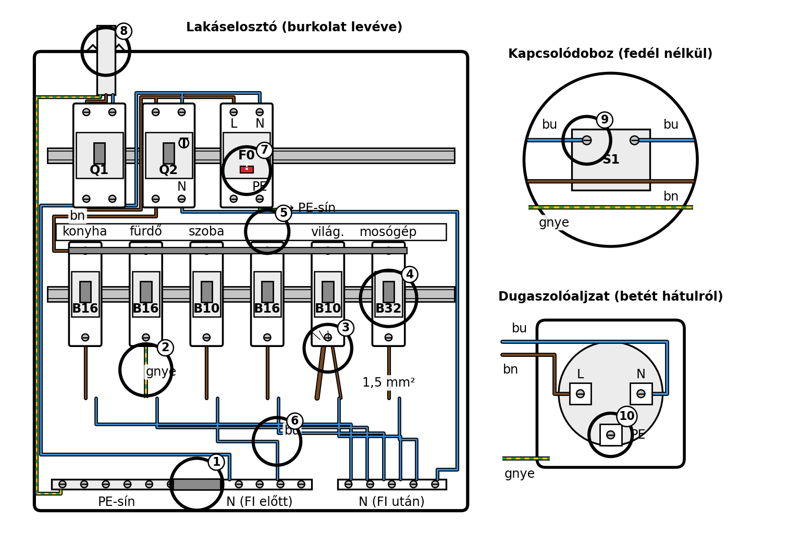

A kapcsolódó elmélet: tankönyv, 24.1 alfejezet.
Gyakorlat: szemrevételezés és működési próbák egy elosztómodellen
Cél. A tanuló önállóan elvégzi a szemrevételezést ellenőrző lista alapján, és kikapcsolt állapotban ellenőrzi a kapcsolók, a PE bekötések és a jelölések meglétét, majd üzemi állapotban a FI próbagomb és a fényforrások működését.
Eszközök és anyagok: tanműhelyi elosztómodell, kétpólusú feszültségvizsgáló, ellenőrző lista, jegyzőkönyv-minta, kézi szerszámok, védőszemüveg, szigetelt csavarhúzó.
Biztonsági korlát. A feladat tanműhelyi környezetre vagy jogosult oktató felügyeletére vonatkozik; hálózati feszültségen önállóan ne végezd. A FI próbagomb megnyomását csak zárt elosztóburkolat mellett, a készülék rendeltetésszerű kezelőszervén végezd.
Az öt biztonsági szabály alkalmazása: lekapcsolás, visszakapcsolás elleni biztosítás, feszültségmentesség ellenőrzése, földelés és rövidre zárás (ha a munkamódszer előírja), szomszédos feszültség alatti részek lefedése.
Lépések:
Ellenőrzési pontok:
Tipikus hibák a gyakorlat során: fázisceruzával ellenőrzik a feszültségmentességet; a FI próbagombot kikapcsolt FI-nél vagy levett burkolat mellett próbálják; a fogyasztókat a szigetelési mérés előtt nem választják le; a jelölések hiányát figyelmen kívül hagyják.
Dokumentálás: az ellenőrző lista, a mérési jegyzőkönyv és a működési próba jegyzőkönyvbe vett eredményei. A hibákat és javításokat a jegyzőkönyvben dátummal, aláírással és a hiba leírásával kell rögzíteni.
1. feladat (A). Sorold fel az ellenőrzés három lépcsőjét, és mindegyikhez írj egy-egy jellemző vizsgálatot!
2. feladat (A). Írj le egy olyan esetet, amikor a szemrevételezés olyan hibát tár fel, amit a mérőműszer nem látna!
3. feladat (B). Készíts ellenőrző listát egy új lakáselosztó szemrevételezéséhez! Legalább 10 pont legyen benne: kötések, védelmek, jelölések, szerelési módok.
4. feladat (B). Rendezd helyes sorrendbe a következő vizsgálatokat: FI-próbagomb, szigetelési ellenállás, hurokimpedancia, folytonosság, szemrevételezés, forgásirány. Jelöld meg, melyik kikapcsolt, melyik üzemi vizsgálat!
5. feladat (C). Egy új fürdőszobai FI-védett áramkör ellenőrzése előtt a megrendelő kérdezi, hogy a FI próbagomb önmagában elegendő-e. Fogalmazz meg egy rövid szakmai választ, amelyben elmagyarázod a próbagomb és a műszeres FI-mérés szerepét, és bemutatod a helyes ellenőrzési sorrendet!
6. feladat (D). Az alfejezet „Valós életbeli alkalmazás: hibakeresési eset” szakaszának esetéből készíts hibajegyzőkönyv-vázlatot! A tünet, a hipotézis, a mérés, az ok, a javítás és a megelőzés rovatokat töltsd ki röviden!
7. feladat (D). Az alábbi ábrán tíz hiba van. Keresd meg és minősítsd őket (életveszélyes / szabványtalan)! Előbb a nyomtatott ábrán dolgozz, utána ellenőrizd magad az interaktív változatban vagy a megoldókulcsban.
Az interaktív változatban a képre kattintva jelölheted a hibát; találatnál a hely bekarikázódik, és rövid magyarázatot kapsz. Ha elakadsz, gondold végig a szemrevételezési ellenőrzőlistát: vezetőszínek, kötések, védelmek és keresztmetszetek, jelölések, bevezetések, állapotjelzők.
8. feladat (B). A polaritásvizsgálatnál a kapcsoló mindkét állásában 0,6 Ω-ot mérsz a foglalat középső érintkezője és a PE között. Mi a hiba, és mit teszel?
Önellenőrzés – válaszok
Feladatok megoldása
1. feladat. A három lépcső: (1) szemrevételezés – pl. a PE-sín bekötésének ellenőrzése; (2) mérés – pl. szigetelési ellenállás, hurokimpedancia, FI-mérés; (3) működési próba – pl. a FI próbagomb leoldásának ellenőrzése, kapcsolók működtetése, forgásirány.
2. feladat. Például: a lakáselosztóban a PE-sínhez nem csatlakozik a fürdőszobai EPH vezeték. A folytonosságmérés csak akkor venné észre, ha kifejezetten azt a pontot mérnénk, de a szemrevételezés azonnal felfedi a hiányzó vezetéket. Szintén ilyen a hiányzó áramkörcímke vagy a rossz színjelölés.
3. feladat. A lista legalább: kötések kidolgozottsága, érvéghüvely, kábelsaru; PE-sín és PE-vezető bekötése; N és PE szétválasztás; túláramvédő készülékek helyes jelölése; FI IΔn értéke, típusa; kapcsolási rajz, áramkörcímkék; kapcsok feliratai; kábelbevezetők tömítése, IP-védettség; szerelvények és szerelési módok a környezethez illőek; nincs hőnyom, repedés, sérülés. Teljes, kitölthető változat az elfogadási feltételekkel: a „Mintaűrlap: szemrevételezési ellenőrzőlista” szakasz.
4. feladat. Helyes sorrend: (1) szemrevételezés – kikapcsolt, (2) folytonosság – kikapcsolt, (3) szigetelési ellenállás – kikapcsolt, (4) hurokimpedancia – üzemi, (5) FI-próbagomb – üzemi, (6) forgásirány – üzemi. Megjegyzés: a FI műszeres mérés üzemi, de itt a próbagomb van.
5. feladat. A FI próbagomb csak a mechanizmus és a belső tesztáramkör működését igazolja. Nem bizonyítja, hogy a készülék a névleges differencia-áramnál, a megadott időn belül leold, ezért a szabványos ellenőrzéshez műszeres FI-mérés is szükséges. A fürdőszobai körben a javasolt sorrend: lekapcsolás, biztosítás, feszültségmentesség ellenőrzés, szemrevételezés (EPH, PE, vízgépészeti csatlakozás, IP-védettség), kikapcsolt folytonossági és szigetelési mérés, majd üzemi hurokimpedancia-mérés és műszeres FI-mérés, végül a FI próbagomb megnyomása és a működési próbák.
6. feladat. Példavázlat: Tünet: konyhai aljzat nem működik, kismegszakító nem oldott ki. Hipotézis: laza csatlakozás, átmeneti ellenállás. Mérés: folytonosság és feszültségvizsgálat kikapcsolt állapotban, szemrevételezés. Ok: hajlékony rézvezeték érvéghüvely nélküli bekötése, meglazult csavar. Javítás: érvéghüvelyezés, csavar meghúzása nyomaték szerint. Megelőzés: tételes kötés-ellenőrzés, érvéghüvely alkalmazása, első bekapcsolás előtti szemrevételezés.
7. feladat. A hibák helye a megoldásábrán:

| Sz. | Hiba | Miért veszélyes | Minősítés | Javítás |
|---|---|---|---|---|
| 1 | Második PE–N áthidalás a PEN-szétválasztás után | Az üzemi N-áram a PE-n és a testeken is folyik; az FI tévesen kiold vagy „vak” lesz | életveszélyes | az áthidalás eltávolítása; PEN-szétválasztás csak egy helyen |
| 2 | Zöld-sárga ér fázisként (kismegszakító kimenetén) | A zöld-sárga eret mindenki védővezetőnek hiszi | életveszélyes | barna/fekete/szürke érre cserélni |
| 3 | Két eltérő keresztmetszetű ér egy kapocsban, érvéghüvely nélkül | A vékonyabb ér nem szorul, átmeneti ellenállás, melegedés, tűz | szabványtalan (tűzveszélyes) | külön kapocs vagy iker-érvéghüvely, nyomaték szerint |
| 4 | B32 kismegszakító 1,5 mm²-es körön | nem teljesül, a vezeték túlterhelődik | életveszélyes (tűz) | B16 (vagy a terhelhetőség szerinti) védelem |
| 5 | Hiányzó áramkörcímke | Hibánál, karbantartásnál rossz kör kapcsolható le | szabványtalan | felcímkézés, áramkörlista frissítése |
| 6 | A kör N-je az FI előtti N-sínről (FI megkerülése) | Az FI nem érzékel helyesen: azonnal kiold vagy megkerülik; a kör védelem nélkül marad | életveszélyes | az N-t az FI utáni N-sínre kötni |
| 7 | SPD piros állapotjelzővel | A betét kimerült, a túlfeszültség-védelem nem működik | szabványtalan | betétcsere (a tartalékbiztosító lekapcsolása után) |
| 8 | Kábelbevezetés tömszelence nélkül, éles peremen | A köpeny kidörzsölődik, földzárlat; megszűnik az IP-védettség | szabványtalan (később életveszélyes) | tömszelence vagy élvédő gyűrű |
| 9 | A kapcsoló a kék (N) eret szakítja | Kikapcsolt lámpán is fázis van – izzócserénél áramütés | életveszélyes | a kapcsoló a fázist (barna) szakítsa |
| 10 | Az aljzat PE-kapcsa üres | Az I. osztályú készülék teste védelem nélkül marad | életveszélyes | a PE-ér bekötése, folytonosságmérés |
8. feladat. Ha a kapcsoló mindkét állásában kis ellenállás mérhető, a fázis nem a kapcsolón át jut a foglalatra: a kapcsoló a nullát szakítja, vagy a dobozban L és N fel van cserélve (esetleg a fázis a kapcsolót megkerülő kötésen megy). Teendő: feszültségmentesítés, az áthidaló eltávolítása a hiba keresése előtt, a kötés javítása, majd a polaritásvizsgálat megismétlése és jegyzőkönyvezése.
Kitöltött minta (példa), a három „N” sor:
| Sz. | Észrevétel | Minősítés |
|---|---|---|
| B5 – N | Q3 kapcsában két sodrott ér érvéghüvely nélkül | javítás átadás előtt |
| C1 – N | a konyhai dobozban fekete ér nullaként | javítás átadás előtt |
| E2 – N | a kádnál hiányzik a kiegészítő EPH | javítás átadás előtt |